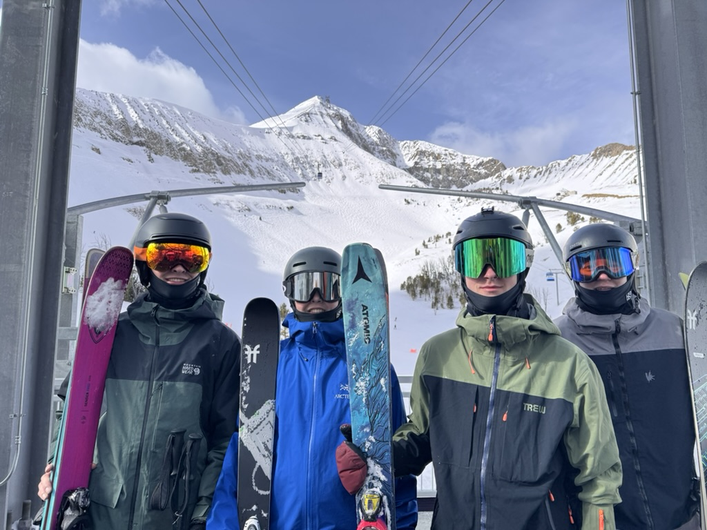
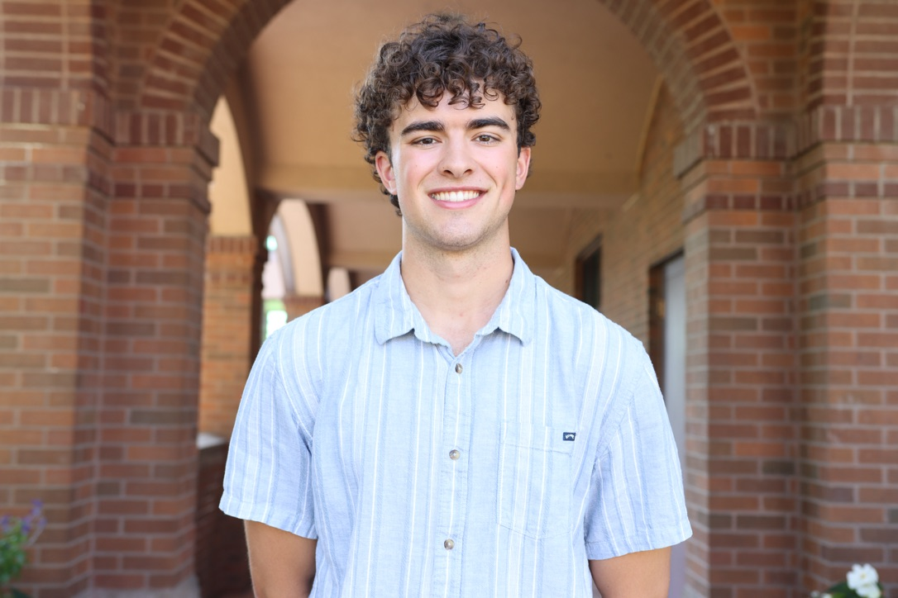
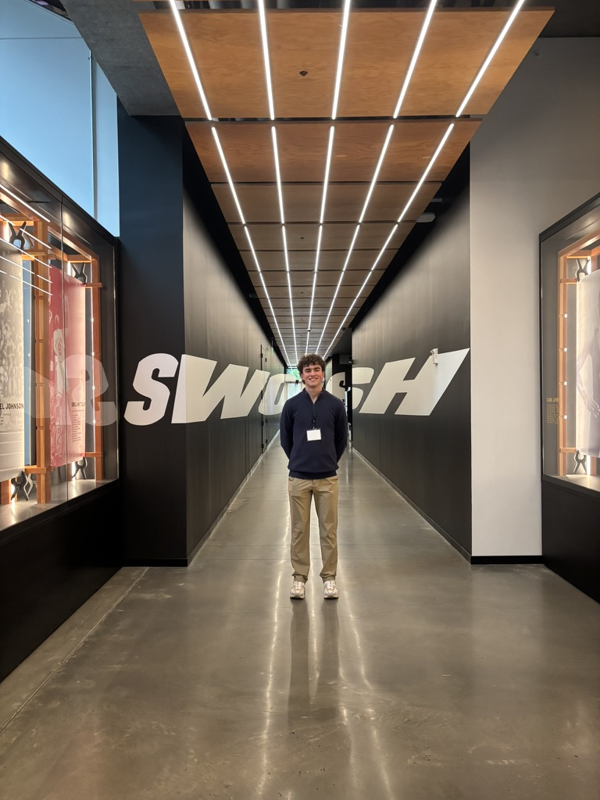

Student Sports Consultant - Barcelona Sports Hub
• Developed a strategic plan to expand E-sports in Barcelona by recruiting local university students and partnering with an existing E-sports team to co-host events
Grant Heyworth is a sophomore at Gonzaga University studying International Business and Spanish. Originally from Beaverton Oregon, he loves the outdoors and adventure in the PNW. He has summitted Mt. Hood, backpacked the Rogue River, and skied all across the western half of the United States. Next semester, he plans to study abroad at the University of Granada in Granada, Spain. After graduation, he hopes to live in South America or work for a global company where he can travel often.



• Developed a strategic plan to expand E-sports in Barcelona by recruiting local university students and partnering with an existing E-sports team to co-host events
Organized events and managed fundraising campaigns for TAMID, a student organization focused on consulting and finance with Israeli startups.
Watch this video to experience some of Grant's favorite outdoor spots in the beautiful state of Oregon.
Grant selected this tableau because Nike comes from Oregon, and shows how important international business is to large companies, especially when outsourcing manufacturing.

Email: gheyworth@zagmail.gonzaga.edu
Links: LinkedIn